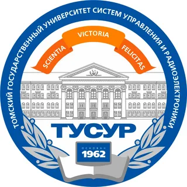

Образование
Уйти в низ страницы
ШКОЛА
С 1-ого до 9-ого класса я учился в 33 школе г.Киселвска.
В начальных классах имел всего одну 4-ку.
В средних классах успеваемость просела,
но я всегда оставался хорошистом.
В 2019г. я решаю пойти доучиться 10 и 11 классы, получить полное среднее образование.
В моей школе невозможно получить среднее образование, поэтому пришлось учиться в школе№5,
которая находилась в соседнем районе.
|
Предмет
|
Результат
|
| Первичный балл |
Тестовый балл |
Процент выполнения |
| Русский |
41 |
67 |
69% |
| Математика |
17 |
76 |
53% |
| Информатика |
25 |
88 |
83% |
ВУЗ

В 2021г. я поступил в ТУСУР на Информатику и вычислительную технику по профилю разработки ПО.
-
TUSUR (Tomsk University of Control Systems and Radioelectronics)
- Томский государственный университет систем управления и радиоэлектроники (ТУСУ́Р — университет в
городе
Томске. Основан 21 апреля 1962 года, согласно постановлению Совета Министров СССР.
-
Разработка ПО
- Разработка программного обеспечения – одна из самых востребованных профессий в наше время.
Программисты
пишут приложения, которые помогают бизнесу и обычным людям решать самые разные задачи: от
калькуляторов
и обработки фотографий до социальных сетей, интернет-магазинов и электронного документооборота. Всё
больше компаний переносят свой бизнес в цифровую сферу, и для этого нужны профессиональные
разработчики
ПО.